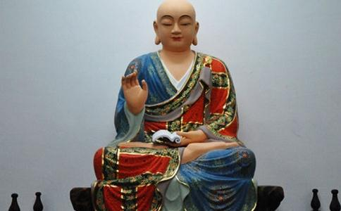

阿难陀，简称阿难，译为
阿难的父亲是白饭王，阿难的哥哥是提婆达多。白饭王是释迦牟尼佛父亲净饭大王的弟弟，所以阿难是释迦牟尼佛的堂弟。在十二月八日，释迦佛睹明星而成正觉的消息传到迦毗罗卫国的皇宫，正当上自国王，下至臣民为佛陀的成道而举国称庆时，宫中又传出一位王子诞生的消息，这可谓是双喜临门，大家高兴极了！所以为他取名阿难陀，意思是“庆喜”。
佛陀侍者 释迦牟尼佛成佛以后，最初曾有
阿难在僧团中深受人们的尊敬，他待人谦逊诚恳。和人相处，从不扬己之长，显人之短。总是尽力帮助别人，为别人提供方便。有时和外道谈论佛法，也只是显正而不破邪。如在翟师罗园，他感化了旃陀外道，奉行佛法。他不是以滔滔的雄辩来征服对方，而是以和暖的阳春，慢慢地溶解冰块。在二十七年侍者的
释迦牟尼佛成佛以后，度了无数的弟子出家，最初全部都是男众，没有度化女人出家。佛陀说，“女人出家，会引起僧团许多问题，
阿难尊者的恳求，佛陀觉得有道理，养育之恩不能忘，佛法久住世间的大事，也不可忽视，佛陀因此立下了比丘尼对比丘的“八敬法”的严格规矩，如果能够遵守这”八敬法”，就允许女人出家为尼。女众之所以有机会出家，阿难尊者的功劳不小。
八不思议一、不受别请：追随佛陀左右，不接受施主个别的供养。
二、不受佛故衣：为了经常在佛陀的身边，恐怕其他弟子说佛陀偏心，所以他从来不接受佛穿过的旧衣服。
三、见不非时：每天有固定的时间跟佛陀见面，而不是随兴而见的。
四、不生欲心：有高深的
五、知佛入定：知道佛陀在什么时候入定，了解佛的境界。
六、知众得益：对于佛陀讲经时的听众，他能了解各人的程度，得到的法益有多少。
七、知佛说法：预知佛在什么时候要说法。
八、法不再问：佛所讲的法，一遍就听清楚，而且牢牢记住，永不再问，所以他是”多闻第一”。
启 《
这个时候，世尊诸根悦豫，姿色清净，光颜巍巍。
尊者阿难，秉承佛的意旨，便从座位上起来，袒露右肩，跪在佛前，合掌而对佛说：“今日世尊，诸根悦豫，姿色清净，光颜巍巍，有如明镜一样净洁，身体内外都明亮，光影通畅无碍，威德的容貌光辉显耀，超越一切，我从来没有见过世尊像今天这样
伟大的圣者啊，我心里想：
今日世尊，住奇特之法；
今日世雄，住诸佛所住；
今日世眼，住导师之行；
今日世英，住最胜之道；
今日天尊，行如来之德。
过去、未来、现在的佛，互相在忆念，为什么世尊的威神光明显耀到这样的地步呢？不是现在的释迦牟尼佛也在忆念诸佛吗？”
于是世尊告阿难曰：“为什么这样问呢？阿难！是
阿难对佛说：“没有天人来教我，是我自己见到佛的威颜而问及这里的道理的。”
佛说：“善哉阿难，你的提问，问得很好！你有甚深的智慧，微妙的辩才，为了怜悯
如来以无尽的大悲心，怜悯三界一切众生，之所以出现在世间，是为了光大阐扬成佛之道，希望拯救一切众生，给予众生真实的利益。
这是无量亿劫以来，难值难见的机会；就好比优昙花，极少出现。你今天所问的，为众生带来非常丰饶的利益，能开启
由于阿难的提问，开启了称
佛陀成道的四十九年，佛陀宣布在迦毗罗卫城三十余里的拘尸那迦罗城的娑罗双树间进入
阿难抑制悲痛的心情，向佛陀提出了四个问题：第一、佛陀涅槃后，以谁为师？第二、佛陀涅槃后，以什么安住？第三、佛陀涅槃后，恶人如何调伏？第四、佛陀涅槃后，经典的结集，如何才叫人起信？
佛陀仍像往常一样，慈祥的回答道：“阿难！你和大家好好记住，你们应以戒为师；依四念处安住；遇到恶人时，默摈置之；经首安立如是我闻，就叫人起信。你们依法而行，就是我的法身常在之处！”
结集经典 佛入灭三天后，阿难起身到王舍城参加第一次圣典结集。路上走了二个多月，四月十四日抵达王舍城。第二天即开始安居，结集
佛陀涅槃后，继承佛陀衣钵的是被尊为首座的长老大迦叶，二十年后，大迦叶已经一百多岁，他就往鸡足山里面涅槃。在他临走时，他把佛陀的家业传嘱给阿难陀。阿难陀以将近八十岁的高龄，继承法统。
空中入灭 领导着教团的阿难陀，年龄也一年比一年高，当他一百二十岁的那一年，有一天在过路中，听到一位青年比丘正诵着偈语：“若人生百岁，不见水老鹤，不如生一日，而得能见之。”阿难陀一听这首偈语被诵得错误得离谱，就很恳切的上前纠正：“人生活百岁，不解生灭法，不如生一日，而能了解之”。青年比丘回去禀告师父。师父说：“你不要听阿难的一派胡言，他已老朽，记忆力减退，智慧消失。”阿难知道后，心想我为众生诵出佛陀的大法，而人们的我见
阿难把佛法流传的责任付嘱给他久已培植的弟子商那和修，然后来到摩竭陀与毗舍离两国交界处的恒河上空，进入涅槃。
摩竭陀国的阿阇世王，最恭敬崇拜阿难尊者，并希望阿难尊者在入灭前通知一声。当阿难将入灭时，立刻派人告诉阿阇世王。当时王正在午睡，卫兵不敢通报。阿难尊者不便久等，就跃身空中，以三昧真火，作自我焚化，舍利好像雨点一般，纷纷地落下恒河两岸。阿阇世王一觉醒来，听到这个消息，万分悲伤，立刻赶到恒河边，已经不见阿难尊者的踪影，不禁嚎啕大哭，只得向空
《